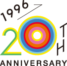
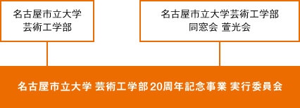

事業内容
| 日付: | 2015年11月21日（土）午後 |
|---|---|
| 13:30- 記念シンポジウム | |
| 17:00- パーティ（記念祝賀会） | |
| 会場: | 名古屋市立大学 芸術工学部 北千種キャンパス |
シンボルマーク

「これまで・いま・これから」という時間の積み重ねを、木の年輪や水の波紋に見立てました。年輪は、開校以来の年月や、学生や卒業生、先生方など芸工に関わった人たちが、年輪や波紋のように社会へ広がり飛躍していくことをイメージしています。
一つひとつの輪は、それぞれの人が得た経験や積み重ねてきた実績などを意味し、一人ひとりの個性でカラーリングされたカラフルな年輪が、芸工20周年を鮮やかに彩ります。
（デザイン／森葉月／芸術工学部5期生卒業生、
株式会社クーグート アートディレクター・デザイナー）
運営体制
この事業は「名古屋市立大学芸術工学部」と「名古屋市立大学芸術工学部同窓会 萱光会」が共催し、芸術工学部教職員や在校生・卒業生等に協力いただいています。
☆また、本サイトは、学生チーム「UNITED（http://united.nagoya）」に所属する芸工生３人（松本和馬、黒田梨沙子、浜田結子）が制作・更新しています。
HOME ＞ 事業概要